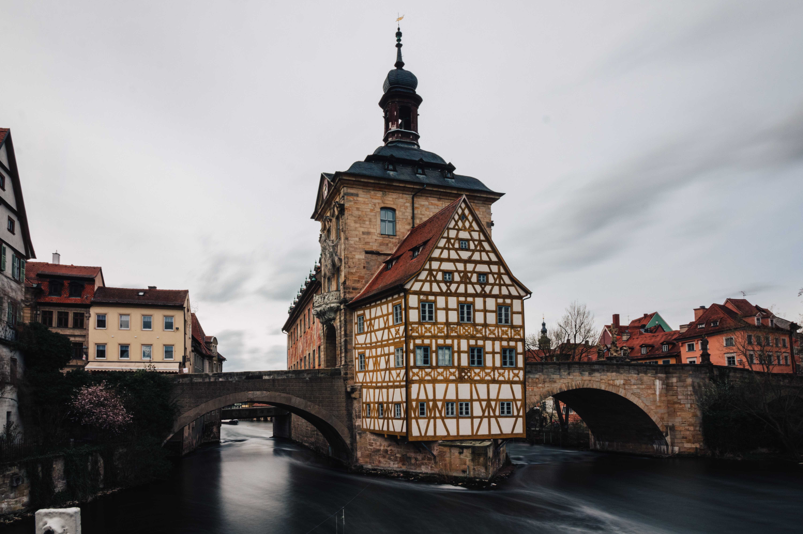

Photo-Workshop
Plan:- Theory: Part 1
- Theory: Part 2
- Hands-On
Shutter Speed
Verschlusszeit
Shutter Speed
Verschlusszeit


Aperture
Blende
Aperture
Blende


ISO
aka Gain
ISO
aka Gain

Exposure
Belichtung
Exposure = Shutter Speed + Aperture + ISO
=> Tradeoffs
Kann die Kamera recht gut selber machen. Verschiedene Modi um einzelne
Werte festzulegen und den Rest automatisch machen zu lassen.
Shutter Speed > je nach situation, 1/brennweite oder kürzer
Aperture > je nach Situation (portrait eher offen, landscape eher geschlossen...)
ISO > immer as low as possible
Color balance
Weißabgleich
Focal Length
Brennweite
Composition
Komposition
- Thirds
- Level
- Cut-Offs
Experience is everything
Everything looks better on a 5" screen